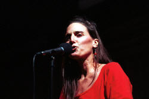

|
 Lisa
Martinovic
is a native San Franciscan who recently returned to the Bay Area after
six glorious years of deep cover research in Hogeye, Arkansas. Lisa
specializes in high-octane social commentary, Ozark character studies,
and a genre she calls poemedy—a
hybrid art form combining the most compelling qualities of poetry and
stand-up comedy. She has eight self-published books and one audio-tape
to her credit. Lisa has toured as a performance poet throughout the US,
featuring everywhere from New York City's Nuyorican Poet's Cafe to City
Lights in San Francisco, and sharing the stage with such noted poets as
Gary Snyder and Miller Williams. She is absolutely tickled to have won
"Best Surprise Act" of the 1996 Austin International Poetry
Festival for her performance piece, Jim Bob Gets a Lap Dance. Lisa’s
poetry has appeared in ten anthologies and numerous magazines, including
Exquisite Corpse, Southern Exposure, The Underwood Review, The San
Francisco Bay Guardian, Outlaw Bible of American Poetry and the
just-released Poetry Slam Anthology.
As the Co-Chair of the Ozark Poets & Writers Collective, Lisa
organized and participated in local poetry slams and feature/open mic
readings. She also served on the Executive Council of Poetry Slam, Inc.,
the national governing body for the growing world of slam, for the
organization's first three years. She was on slam teams representing The
Ozarks at the National Poetry Slam from 1995-99. Three-time winner of
the annual Ozark Grand Slam, she was not bashful about calling herself
the SlamQueen of the Ozarks. Now back in San Francisco, she's reinvented
herself as Slaminatrix, hoping that her inner Buddhist will understand.
She competed as a member of Team Santa Cruz in the 2000 National Poetry
Slam. When she’s not slamming, she writes essays for the San Francisco
Chronicle and commentaries for the local NPR affiliate. Lisa's latest
chapbook—The Truth about Her Lips—is the first slam chap to feature
a centerfold.
Lisa Martinovic's Homepage:
www.slaminatrix.com
|
{kind=link}